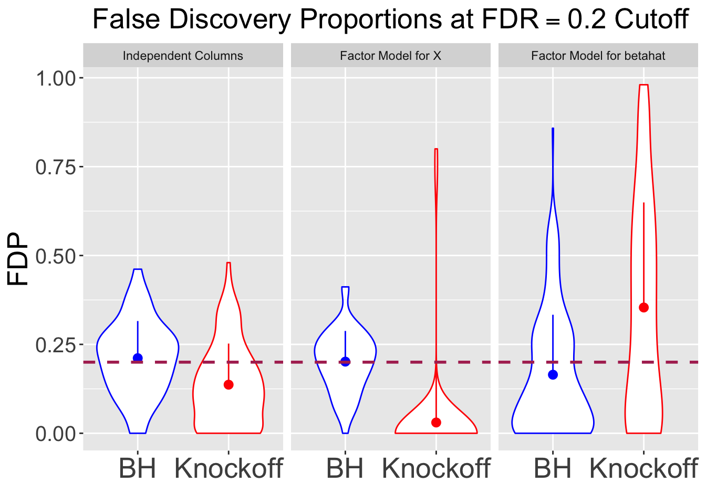
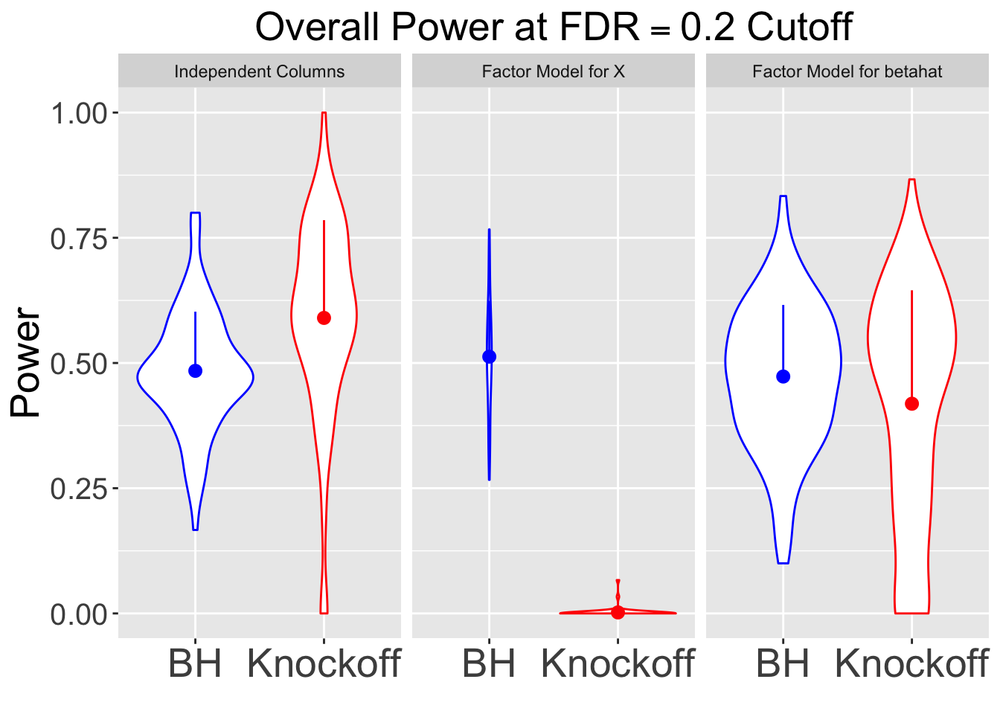

Knockoff on Correlated Design MatrixLast updated: 2018-02-06
Code version: cacdc03
In the Knockoff paper simulations, the columns of \(X\) are either independent or simulated from a Toeplitz correlation where \(Cor(X_i, X_j) = \rho^{|i - j|}\). Here we are replicating the independent results, and investigating how well Knockoff deal with other correlation structures.
In the following simulations, we always have \(n = 3000\), \(p = 1000\). Out of \(p = 1000\) \(\beta_j\)’s, \(970\) of them are zeroes, and the rest \(k = 30\) signals have \(15\) \(\beta_j = A\) and \(15\) \(\beta_j = -A\). For a certain \(X\), \(Y_n \sim N(X_{n\times p}\beta_p, I_n)\). Here are three scenarios to generate the columns of \(X_{n \times p}\).
All simulations are using \(q = 0.2\) cutoff.
## Independent columns
X <- matrix(rnorm(n * p), n , p)
## Normalization
X <- t(t(X) / sqrt(colSums(X^2)))
## Average sebetahat
sqrt(mean(diag(solve(crossprod(X)))))[1] 1.224379## Signal strength
A <- 3.5## Generate correlation matrix of X
d <- 5
B <- matrix(rnorm(p * d, 0, 1), p, d)
Sigma.X <- tcrossprod(B) + diag(p)
Rho.X <- cov2cor(Sigma.X)
## Simulate X
X <- matrix(rnorm(n * p), n, p) %*% chol(Rho.X)
## Normalization
X <- t(t(X) / sqrt(colSums(X^2)))
## Average sebetahat
sqrt(mean(diag(solve(crossprod(X)))))[1] 2.979758## Signal strength
A <- 8## Generate correlation matrix of betahat
d.max <- 100
d <- sample(d.max, 1)
B <- matrix(rnorm(p * d, 0, 1), p, d)
Sigma.betahat <- tcrossprod(B) + diag(p)
Cor.betahat <- cov2cor(Sigma.betahat)
## Simulate X with independent columns
X <- matrix(rnorm(n * p), n, p)
## Normalize X
X <- t(t(X) / sqrt(colSums(X^2)))
## Transform independent columns to have Sigma_betahat^{-1} correlation structure
X <- X %*% chol(solve(Cor.betahat))| FDP.BH | FDP.Knockoff | Power.BH | Power.Knockoff |
|---|---|---|---|
| 0.2113 | 0.1367 | 0.4843 | 0.5900 |
| 0.2015 | 0.0303 | 0.5127 | 0.0020 |
| 0.1647 | 0.3538 | 0.4730 | 0.4187 |


sessionInfo()R version 3.4.3 (2017-11-30)
Platform: x86_64-apple-darwin15.6.0 (64-bit)
Running under: macOS High Sierra 10.13.2
Matrix products: default
BLAS: /Library/Frameworks/R.framework/Versions/3.4/Resources/lib/libRblas.0.dylib
LAPACK: /Library/Frameworks/R.framework/Versions/3.4/Resources/lib/libRlapack.dylib
locale:
[1] en_US.UTF-8/en_US.UTF-8/en_US.UTF-8/C/en_US.UTF-8/en_US.UTF-8
attached base packages:
[1] stats graphics grDevices utils datasets methods base
other attached packages:
[1] ggplot2_2.2.1 knitr_1.19 knockoff_0.3.0
loaded via a namespace (and not attached):
[1] Rcpp_0.12.14 magrittr_1.5 munsell_0.4.3 colorspace_1.3-2
[5] rlang_0.1.6 stringr_1.2.0 highr_0.6 plyr_1.8.4
[9] tools_3.4.3 grid_3.4.3 gtable_0.2.0 git2r_0.21.0
[13] htmltools_0.3.6 yaml_2.1.16 lazyeval_0.2.1 rprojroot_1.3-2
[17] digest_0.6.14 tibble_1.4.1 codetools_0.2-15 evaluate_0.10.1
[21] rmarkdown_1.8 labeling_0.3 stringi_1.1.6 pillar_1.0.1
[25] compiler_3.4.3 scales_0.5.0 backports_1.1.2 This R Markdown site was created with workflowr